Breakthroughs in Peer-to-Peer Networking#
“A distributed system is one in which the failure of a computer you didn’t even know existed can render your own computer unusable.” – Leslie Lamport, email message, 1987
A blockchain is a shared record, like a Python list of blocks. Each block holds a batch of transactions (payments or other changes to the record). Thousands of computers keep copies of the list in step. Nobody runs a central server. Each computer is a peer, or node: an equal participant that talks directly to a few other peers. Such a network is peer-to-peer.
Agreement needs communication. Peers learn about new transactions and blocks by gossip: each peer passes news on to the peers it is connected to, as people pass on a rumor. Peers find each other through an overlay: a network of “who knows whom” built on top of the internet. Each peer sees the world only through the connections it happens to have.
This chronology traces the ideas behind blockchainkit.network, from
random graphs to Dandelion. It follows four questions:
How are peers connected? Random, small-world and scale-free graphs, and the Kademlia overlay.
How does news spread? Gossip, reliable broadcast and block relay.
How are events ordered without a shared clock? Lamport and vector clocks, and the CAP theorem.
What can an attacker do to the network? Fake identities (Sybil attacks), cutting one peer off (eclipse attacks), and working out who sent a transaction (deanonymization).
Every model runs in simulated time from a fixed seed. Reproducible experiments and research scope describes what the simulations do and do not capture.
The page uses a few conventions throughout:
A graph is a set of nodes joined by links (also called edges). In Python, think of a dict of sets:
graph[v]is the set of \(v\)’s neighbors.The degree of a node is its number of links,
len(graph[v]).A path is a chain of links from one node to another. Its length is the number of links, or hops. A graph is connected if there is a path between every pair of nodes.
\(\ln n\) is
math.log(n)and \(\log_2 n\) ismath.log2(n). \(e \approx 2.718\).“With probability \(p\)” means “if
random.random() < p”.
1959 – Random Graphs and the Connectivity Threshold#
Suppose peers connect to each other at random. How many links does each peer need before every peer can reach every other?
Erdős and Rényi founded the theory of random graphs to answer questions like this. They asked which properties appear, and how suddenly, as links are added at random. Their model, written \(G(n, p)\), is built like this:
Start with \(n\) peers and no links.
For each of the \(n(n-1)/2\) pairs of peers, flip a biased coin. Add a link with probability \(p\).
Each peer then has about \(np\) links on average. Connectivity has a sharp threshold. Below a certain value of \(p\) the network is almost surely in pieces. Just above it, the network is almost surely connected. The switch happens when each peer has about \(\ln n\) links:
In words: pick any small fixed number \(\varepsilon > 0\). As \(n\) grows, the chance that the graph is connected tends to 0 if \(p\) is a little below \(\ln n / n\), and to 1 if it is a little above.
What this means in practice:
Just below the threshold, what keeps the graph apart is almost always a few isolated peers, with no links at all. So the practical rule is to make sure no peer is left with too few links.
\(\ln n\) grows very slowly. Ten thousand peers need only about nine links each, since
math.log(10_000)is about 9.2.Unstructured peer-to-peer networks such as Bitcoin’s rely on this result. A Bitcoin node opens eight outbound connections (ones it starts itself) and also accepts inbound ones (ones other peers start). That puts it above the threshold.
Implementation: blockchainkit.network.systems.topology.erdos_renyi()
and blockchainkit.network.systems.topology.Graph.
References: P. Erdős and A. Rényi, On random graphs I, Publicationes Mathematicae Debrecen 6, 290–297 (1959).
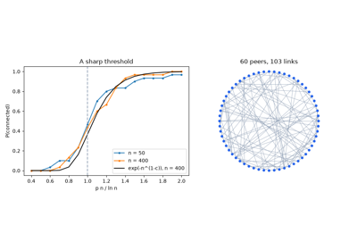
Random graphs and the connectivity threshold (Erdős and Rényi 1959)
1961-1965 – Discrete-Event Simulation#
Testing a network of thousands of peers on real machines is slow and costly. Runs also differ each time, so results are hard to repeat.
Geoffrey Gordon’s GPSS (1961) and Dahl and Nygaard’s Simula (1965) made
discrete-event simulation a standard tool. The idea is not to wait for real
time to pass. The simulator jumps straight from one event to the next. It keeps
future events in a priority queue ordered by time, like Python’s heapq:
Push the starting events as
(time, event)pairs onto the queue.Pop the earliest event:
t, ev = heapq.heappop(queue).Set the simulated clock to
t.Run the event. It may push further events, such as “this message arrives 3 ticks from now”.
Repeat until the queue is empty.
This design has useful properties:
Nothing happens between events, so no time is wasted waiting.
A seed is the starting value of a random number generator, as in
random.seed(42). With a fixed seed, every run is identical.Simula’s objects and classes were invented to model the simulated entities. They went on to found object-oriented programming, the same idea as Python’s
class.
Implementation: blockchainkit.network.systems.gossip.SimulatedNetwork
schedules each message as a delivery event a seeded random number of ticks
after it is sent, suppresses duplicates, and drops in-flight messages when a
link is cut. It never sleeps or reads the wall clock.
References: G. Gordon, A general purpose systems simulation program, Proc. Eastern Joint Computer Conference, 87–104 (1961); O.-J. Dahl and K. Nygaard, SIMULA — an ALGOL-based simulation language, Communications of the ACM 9(9), 671–678 (1966). DOI.
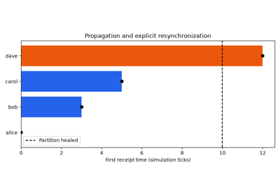
Discrete-event simulation: a network on an event queue (GPSS 1961, Simula 1965)
1978 – Lamport Clocks: Time from Messages#
Computers’ clocks disagree. So physical time cannot always say which of two events came first.
Here a process is one computer running its part of the program. An event is one step of a process: a local step, sending a message, or receiving one. Lamport defined when event \(a\) happened before event \(b\), written \(a \to b\). He used only the messages, not the clocks:
If \(a\) and \(b\) happen in the same process and \(a\) comes first, then \(a \to b\).
If \(a\) sends a message and \(b\) receives that message, then \(a \to b\).
If \(a \to c\) and \(c \to b\), then \(a \to b\). (The relation is transitive: chains count.)
Nothing else counts. Formally, it is the smallest transitive relation that contains the first two rules. So \(a \to b\) means exactly that \(a\) could have influenced \(b\).
A Lamport clock turns this into numbers. Each process keeps an integer
counter C:
At every event, the process increments its counter:
C += 1.When it sends a message, it attaches the current value of
Cas the message’s timestamp.When it receives a message with timestamp
t, it setsC = max(C, t) + 1.
This guarantees the clock condition:
that is, if \(a\) could have influenced \(b\), then \(a\) has the smaller timestamp.
Consequences and limits:
Sorting events by the tuple
(C, process_id)gives one total order: every pair of events is ordered, ties are broken by process number, and every process computes the same order.Lamport used this to replicate a state machine. A state machine is like a Python object whose state changes only through a sequence of commands. If all copies (replicas) apply the same commands in the same order, they stay identical. This is the principle behind every blockchain.
The converse fails. \(C(a) < C(b)\) does not mean that \(a\) could have influenced \(b\). The two events may be unrelated. Vector clocks (1988) fix this.
Implementation: blockchainkit.network.systems.clocks.lamport_timestamps();
blockchainkit.network.visualizers.plots.plot_space_time() draws the
diagram.
References: L. Lamport, Time, clocks, and the ordering of events in a distributed system, Communications of the ACM 21(7), 558–565 (1978). DOI.
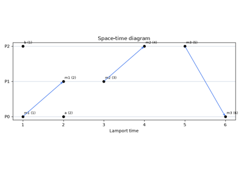
Lamport clocks: ordering events without a shared clock (Lamport 1978)
1985-1987 – Rumor Spreading in log₂ n + ln n Rounds#
If everyone who knows a rumor tells one random person per round, how long until everyone knows?
This is push gossip. Take \(n\) peers, any of whom can call any other (the complete graph):
One peer knows the rumor.
In each round, every peer that knows it picks one peer uniformly at random (
random.choice(peers)) and tells it.Repeat until every peer knows.
Frieze and Grimmett showed that this informs all \(n\) peers in \(\log_2 n + \ln n + o(\log n)\) rounds. Here \(o(\log n)\) is an error term that grows more slowly than \(\log n\). Pittel sharpened the error to \(O(1)\), a term bounded by a constant that does not grow with \(n\):
In words: the number of rounds \(T_n\) is a doubling term plus a mop-up term, plus at most a constant. The two terms come from two phases:
Doubling phase (\(\log_2 n\)). While few peers know the rumor, almost every call reaches someone new. So the informed set doubles each round.
Mop-up phase (\(\ln n\)). This is like collecting the last few stickers of an album: most draws are repeats. Once nearly all \(n\) peers are calling, a given uninformed peer is missed by every caller with probability \((1 - 1/n)^n \approx 1/e\). So the uninformed shrink by a factor \(e\) per round, and need about \(\ln n\) rounds to vanish.
A million peers need about \(20 + 14 = 34\) rounds. Logarithmic spreading time is why gossip scales to networks of any size.
Implementation: blockchainkit.network.systems.epidemics.spread_rumor()
and blockchainkit.network.systems.epidemics.pittel_rounds().
References: A. M. Frieze and G. R. Grimmett, The shortest-path problem for graphs with random arc-lengths, Discrete Applied Mathematics 10, 57–77 (1985); B. Pittel, On spreading a rumor, SIAM Journal on Applied Mathematics 47(1), 213–223 (1987). DOI.
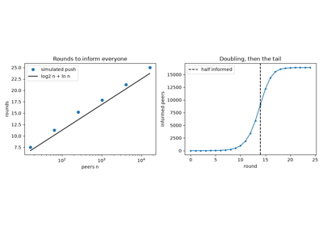
Rumor spreading in log2 n + ln n rounds (Frieze and Grimmett 1985, Pittel 1987)
1987 – Epidemic Algorithms for Replicated Databases#
Many copies of a database must stay the same. There is no central server to tell each copy about changes.
Demers and colleagues at Xerox PARC faced this with the Clearinghouse, a directory that mapped names to network addresses. Each copy of it is a replica. Their idea: each replica regularly contacts a random other one, like a disease passing from person to person. There are two ways to talk:
Push. The caller tells the other replica about the updates it knows.
Pull. The caller asks “what’s new?”, and the other replica answers.
Let \(s_i\) be the fraction of replicas still uninformed after round \(i\). Once most replicas know the update,
so each push round divides the stragglers by \(e\), while each pull round squares their fraction. The reasons:
Under push, an uninformed replica stays uninformed only if no informed caller picks it. That happens with probability about \(1/e\), as in the previous entry.
Under pull, an uninformed replica stays uninformed only if it calls another uninformed replica. That happens with probability \(s_i\).
So push cuts the stragglers by a constant factor per round. Pull squares their fraction (0.1, then 0.01, then 0.0001) and finishes in a few rounds. Combining the two (push-pull) gives push’s fast start and pull’s fast finish.
They also introduced two styles of gossip:
Anti-entropy: periodically compare and reconcile whole databases, so nothing is ever missed.
Rumor mongering: spread a new update until it seems old news, then stop.
Block and transaction relay in Bitcoin descends from these ideas.
Implementation: blockchainkit.network.systems.epidemics.spread_rumor()
with mode set to "push", "pull" or "push-pull";
blockchainkit.network.visualizers.plots.plot_rumor_spread().
References: A. Demers et al., Epidemic Algorithms for Replicated Database Maintenance, PODC ‘87, 1–12 (1987). DOI.
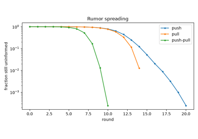
Epidemic algorithms: push, pull and push-pull (Demers et al. 1987)
1987 – Bracha’s Reliable Broadcast#
A dishonest sender might tell half the group one thing and half another.
A Byzantine (or faulty) process is one that may do anything: lie, stay silent, or send different values to different peers. The name comes from a puzzle about Byzantine generals, some of them traitors, who must agree on a plan. A correct process follows the protocol. To deliver a value means to accept it as final and hand it to the application.
Bracha built Byzantine reliable broadcast. It guarantees that either every correct process delivers the same value, or none delivers anything. It tolerates \(t\) faulty processes out of \(n\). It uses two rounds in which everyone messages everyone (all-to-all):
The sender sends its value \(v\) to every process.
Echo. On receiving the sender’s value, each process sends ECHO(\(v\)) to everyone.
Ready. On receiving \(\lceil (n + t + 1)/2 \rceil\) ECHO messages (
math.ceil((n + t + 1) / 2)), or \(t + 1\) READY messages, for one value, a process sends READY for that value to everyone. It does this only once.Deliver. On receiving \(2t + 1\) READY messages for one value, it delivers that value.
For example, with \(n = 4\) and \(t = 1\), a process needs 3 echoes or 2 READYs to send READY, and 3 READYs to deliver. All of this needs
that is, fewer than a third of the processes may be faulty. Then the \(n - t\) correct processes can reach both thresholds on their own, without help from faulty ones. Both \(n - t \ge \lceil (n + t + 1)/2 \rceil\) and \(n - t \ge 2t + 1\) reduce to \(n \ge 3t + 1\).
Why it works:
Agreement comes from quorum overlap. A quorum is a set of processes large enough that any two such sets must share members. Two echo quorums together hold more than \(n + t\) messages. So they share at least \(t + 1\) processes, and at least one of those is correct. A correct process echoes only one value. So no two correct processes become ready for different values.
The \(t + 1\) READY rule is safe. Among \(t + 1\) senders at least one is correct, so the value really did gather an echo quorum.
Delivery is all-or-nothing. If one correct process delivers, it saw \(2t + 1\) READY messages. At least \(t + 1\) of them came from correct processes, and those reach everyone. So every correct process gets \(t + 1\) READY messages and sends READY itself. Then all \(n - t \ge 2t + 1\) correct processes deliver.
Reliable broadcast is a building block of Byzantine consensus in asynchronous networks (ones with no bound on how long a message may take). It is also a building block of modern DAG-based blockchain protocols, in which blocks form a web of references rather than a single chain.
Implementation: blockchainkit.network.systems.broadcast.reliable_broadcast()
runs the protocol in synchronous rounds against faulty processes that collude
with the sender’s split.
References: G. Bracha, Asynchronous Byzantine agreement protocols, Information and Computation 75(2), 130–143 (1987). DOI.
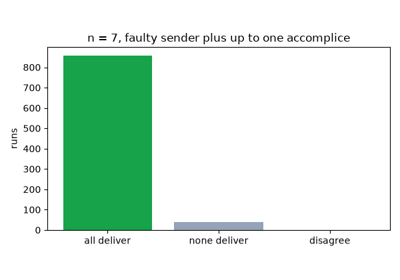
Byzantine reliable broadcast: echo, then ready (Bracha 1987)
1988 – Vector Clocks: Detecting Concurrency#
A Lamport clock puts causes before effects. But it cannot say when two events happened independently. Two events are concurrent if neither happened before the other.
Fidge and Mattern, working independently, replaced the single counter with a list \(V\) of \(n\) counters, one per process. Process \(p\) runs:
Start with
V = [0] * n.At each event, increment its own entry:
V[p] += 1.When sending, attach a copy of
Vto the message.On receiving a message carrying
W, first take the entrywise maximum,V = [max(a, b) for a, b in zip(V, W)]. Then count the receipt as an event (step 2).
Then \(V(a)[q]\) counts the events at process \(q\) that happened before or at \(a\). This characterizes causality exactly:
In words: \(a\) happened before \(b\) exactly when every entry of
\(a\)’s vector is at most the matching entry of \(b\)’s, and the two
vectors differ. For example, [2, 0, 1] comes before [2, 1, 1].
Consequences:
If neither vector is \(\le\) the other, as with
[1, 0]and[0, 1], the events are concurrent.Replicated data stores use vector clocks and their descendants to detect conflicting updates. Such updates were made independently, so they must be reconciled.
Implementation: blockchainkit.network.systems.clocks.vector_timestamps(),
blockchainkit.network.systems.clocks.happened_before() and
blockchainkit.network.systems.clocks.concurrent().
References: C. J. Fidge, Timestamps in message-passing systems that preserve the partial ordering, Proc. 11th Australian Computer Science Conference, 56–66 (1988); F. Mattern, Virtual time and global states of distributed systems, Parallel and Distributed Algorithms, 215–226 (North-Holland, 1989).
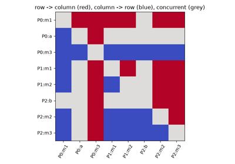
Vector clocks: detecting concurrency (Fidge and Mattern 1988)
1998 – Small-World Networks#
In a network where everyone knows only their neighbors, messages crawl.
Watts and Strogatz measured networks with two numbers:
The average path length \(L\): the fewest hops between two nodes, averaged over all pairs. Breadth-first search finds it.
The clustering \(C\): how often two neighbors of a node are also neighbors of each other. (“Are my friends friends with each other?”)
They built their networks in two steps:
Start from a ring lattice: \(n\) nodes in a circle, each linked to its \(k\) nearest neighbors (\(k/2\) on each side).
Go through the links. With probability \(p\), rewire a link: move one of its ends to a random node.
The lattice (\(p = 0\)) has high clustering but long paths:
In words: the clustering approaches \(3/4\) for large \(k\), whatever the size. But the path length grows in proportion to \(n\), so a huge ring is very slow to cross.
What they found:
Already at \(p \approx 0.01\), the average path length \(L\) drops close to the random-graph value \(\ln n / \ln k\).
Meanwhile the clustering \(C\) barely moves. Each shortcut shortens many paths but changes the clustering of only two nodes.
They found such small worlds in actors’ collaborations, the power grid and a worm’s nervous system.
For a peer-to-peer network the lesson is that a few random links are enough to make every peer close to every other, even if most links are local.
Implementation: blockchainkit.network.systems.topology.watts_strogatz(),
blockchainkit.network.systems.topology.ring_lattice(),
blockchainkit.network.systems.topology.Graph.average_path_length() and
blockchainkit.network.systems.topology.Graph.clustering().
References: D. J. Watts and S. H. Strogatz, Collective dynamics of ‘small-world’ networks, Nature 393, 440–442 (1998). DOI.
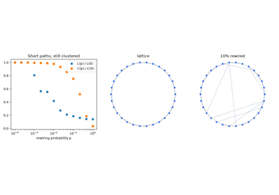
Small-world networks: a few shortcuts (Watts and Strogatz 1998)
1999 – Scale-Free Networks#
Real networks have a few nodes with enormous numbers of links. Random graphs do not.
The degree distribution \(P(k)\) is the fraction of nodes with exactly \(k\) links. In a random graph it is a Poisson distribution. Degrees then cluster tightly around the average, and a node with ten times the average degree essentially never appears. Barabási and Albert observed that the Web’s link counts instead follow a power law, \(P(k) \propto k^{-\gamma}\). That curve falls off slowly, so very large degrees do occur.
They explained it by growth with preferential attachment. The popular become more popular still:
Start with a small connected core.
Add one new node at a time. Each new node links to \(m\) existing nodes.
It picks each of them with probability proportional to its degree, roughly
random.choices(nodes, weights=degrees).
Their continuum argument treats each node’s degree as a quantity that grows smoothly over time, and solves the resulting simple equation. It gives a degree distribution that does not depend on time or network size:
In words: doubling the degree makes such nodes about 8 times rarer, since \(2^3 = 8\). That is far slower than a Poisson tail.
Consequences:
The result is a few huge hubs and many small nodes.
Hubs shorten paths and speed up gossip. But they concentrate risk.
Albert, Jeong and Barabási (2000) showed that such networks are robust to random failures, yet fragile under targeted attacks on their hubs.
A random failure almost always hits one of the many small nodes, which carry few paths. An attacker who removes the few hubs removes the shortcuts that hold the network together.
Implementation: blockchainkit.network.systems.topology.barabasi_albert().
References: A.-L. Barabási and R. Albert, Emergence of scaling in random networks, Science 286(5439), 509–512 (1999). DOI.
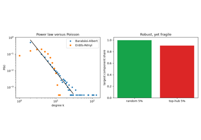
Scale-free networks: preferential attachment (Barabási and Albert 1999)
2000-2002 – The CAP Theorem#
When the network breaks, replicas cannot talk to each other. What should they do?
Brewer conjectured in a 2000 keynote that a distributed system can provide at most two of three properties:
Consistency: the system behaves as if there were one copy of the data. The precise word is linearizable: each operation appears to happen at one instant, so a read always returns the latest completed write.
Availability: every request to a live replica succeeds.
Partition tolerance: the system keeps working when a partition splits the network into groups that cannot exchange messages.
Gilbert and Lynch proved it. Take a read/write register, the simplest possible database: one variable that clients can read or overwrite. Take an asynchronous network that may lose messages. Then no register can guarantee both availability and linearizability. The argument is short:
Cut the replicas into two sides that cannot exchange messages.
A client writes a new value on one side. The write succeeds.
Another client then reads on the other side.
Availability forces the reader’s replica to answer without hearing from the writer’s side. So it returns the old value.
Linearizability forbids that, because the read came after the write.
Partitions cannot be ruled out. So the real choice is what to give up during a partition: refuse some requests, or answer them knowing the other side may disagree. Blockchains make both choices:
Quorum systems such as PBFT choose consistency. In PBFT, an action needs votes from a large majority of a fixed group. The minority side cannot gather enough votes, so it stalls.
Nakamoto consensus chooses availability. This is Bitcoin’s rule: follow the chain with the most work behind it. Both sides keep extending a chain. When the network heals, one side’s blocks are discarded.
Implementation: blockchainkit.network.systems.replication.ReplicatedRegister
with mode="consistent" (majority quorums) or mode="available" (answer
locally, last writer wins on healing).
References: E. A. Brewer, Towards robust distributed systems, keynote, PODC 2000; S. Gilbert and N. Lynch, Brewer’s conjecture and the feasibility of consistent, available, partition-tolerant web services, ACM SIGACT News 33(2), 51–59 (2002). DOI.
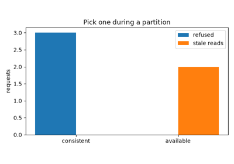
The CAP theorem: consistency or availability (Brewer 2000, Gilbert and Lynch 2002)
2002 – Kademlia: Routing by XOR Distance#
A distributed hash table (DHT) is like a Python dict spread over many computers. Each key is stored on the nodes whose identifiers are closest to it. The problem is to find who stores a piece of data without knowing every node.
Each node and each key gets a long integer identifier (in Kademlia, 160
bits). Maymounkov and Mazières defined the distance between two identifiers as
their XOR, read as an integer: \(d(x, y) = x \oplus y\), or x ^ y in
Python. This distance has useful properties:
\(d(x, x) = 0\), and \(d(x, y) = d(y, x)\) (it is symmetric).
For any point \(x\) and distance \(\delta\) there is exactly one point at that distance, namely
x ^ delta. So lookups from different nodes toward the same key converge on the same path.
Node \(x\) keeps k-buckets: a few contacts at every scale of distance. Bucket \(i\) holds at most \(k\) contacts whose distance from \(x\) lies between \(2^i\) and \(2^{i+1}\):
In words: bucket \(i\) holds nodes whose highest bit differing from
\(x\) is bit \(i\), that is (x ^ y).bit_length() - 1 == i. So
\(x\) knows many nodes near it and a few far away. A lookup for key
\(K\) runs:
Node \(x\) finds the highest bit \(i\) in which it differs from \(K\).
It picks a contact \(y\) from \(\text{bucket}_i(x)\). Both \(y\) and \(K\) differ from \(x\) at bit \(i\), so they agree with each other on bit \(i\) and on every higher bit. Hence \(d(y, K) < 2^i\).
It asks \(y\) to continue the lookup from step 1.
The lookup stops when no contact is closer to \(K\).
Why it is fast:
Each hop removes at least one leading bit of the distance. So the upper bound on the distance at least halves.
\(n\) random identifiers are spread evenly. So about \(\log_2 n\) halvings reach the node closest to the key, and a lookup takes \(O(\log n)\) hops. A million nodes need about 20.
Kademlia runs BitTorrent’s distributed hash table, Ethereum’s node discovery and IPFS.
Implementation: blockchainkit.network.systems.kademlia.KademliaNetwork
and blockchainkit.network.systems.kademlia.xor_distance(). Buckets are
filled from global knowledge and lookups are greedy and single-path; real
Kademlia learns contacts from traffic, prefers long-lived ones, and queries
several contacts in parallel.
References: P. Maymounkov and D. Mazières, Kademlia: A peer-to-peer information system based on the XOR metric, IPTPS 2002, LNCS 2429, 53–65 (2002). DOI.
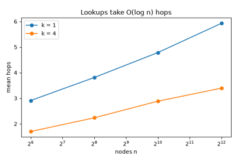
Kademlia: routing by XOR distance (Maymounkov and Mazières 2002)
2002 – The Sybil Attack#
On an open network, one person can pretend to be many. Then any rule that counts heads can be taken over by whoever creates the most identities. Examples are a vote, or a choice of who stores some data. The attack is named after a book about a woman with many personalities.
Douceur proved a limit. Suppose there is no logically central trusted authority: no single party, like a passport office, that certifies identities. Then a peer-to-peer system cannot prevent one entity from presenting many identities. Only the entity’s resources limit how many.
In Kademlia, for example, an attacker who chooses its own identifiers can capture a key:
Pick a target key \(K\).
Create a few identifiers right next to \(K\), such as
K ^ 1andK ^ 2.Join the network with them. They are now the nodes closest to \(K\).
Every lookup for \(K\) ends at the attacker, who answers it however it likes.
Systems can raise the cost of an identity, but not tie identities to people:
Derive the identifier from a key. A hash function is like Python’s
hash(), but built so that nobody can find two inputs with the same output, or an input with a chosen output. A public key is the shareable half of a key pair that its owner generates. If the identifier must be the hash of a public key, the attacker cannot choose it. It must grind keys: generate them in a loop until one hashes near \(K\).Solve a puzzle. Make each new identity cost some computation.
Bitcoin sidesteps the problem by never counting identities. Its consensus weighs computation instead. Its network layer assumes that some neighbors may be hostile.
Implementation: blockchainkit.network.systems.kademlia.node_id() and
blockchainkit.network.systems.kademlia.KademliaNetwork.closest().
References: J. R. Douceur, The Sybil attack, IPTPS 2002, LNCS 2429, 251–260 (2002). DOI.
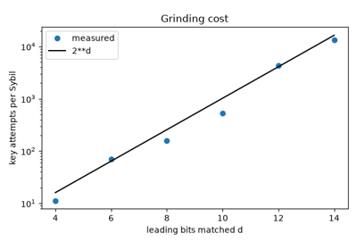
The Sybil attack: identities are cheap (Douceur 2002)
2009 – Announce, Then Fetch: inv and getdata#
Blocks are large. Sending every block to every neighbor wastes bandwidth, because most neighbors already got it from someone else.
The first Bitcoin client relayed blocks and transactions by announcement instead. Each item is named by its hash, a short fingerprint of its contents. Relay runs like this:
A peer with a new item sends an
inv(“inventory”) message to its neighbors. It carries only the item’s hash.A neighbor checks
if h not in seen. If the item is new to it, it replies withgetdata, which asks for the item.Only then does the peer send the item itself.
The neighbor now announces the item to its own neighbors, from step 1.
So each node downloads each block once. Now count messages in a connected graph with \(E\) links and \(n\) peers. The origin sends to all its neighbors. Every other peer sends to all but the one it heard from. The degrees add up to \(2E\), because each link has two ends. So \(2E - (n - 1)\) messages cross the links either way. What changes is how many of them carry the whole block. Flooding means sending the full item every time:
In words: both schemes send the same number of announcements, but announcing sends only one full copy to each peer other than the origin.
The trade-off:
Every peer still hears about the block from each neighbor. But the redundant copies shrink from whole blocks to hashes of a few dozen bytes.
The price is a round trip at every hop: a message there and a reply back before the block can move on. Each hop takes three messages (
inv,getdata, block) instead of one. This later motivated compact blocks (2016).
Implementation: blockchainkit.network.systems.relay.relay_cost(),
checked against the message count of
blockchainkit.network.systems.gossip.SimulatedNetwork. Costs are
counted analytically, one item per message; Bitcoin batches many hashes per
inv and now relays headers first.
References: S. Nakamoto, Bitcoin v0.1 source code, main.cpp (2009);
Bitcoin protocol documentation.
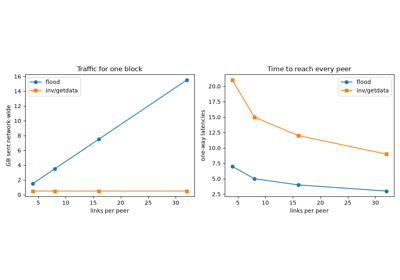
Announce, then fetch: Bitcoin’s inv/getdata relay (Nakamoto 2009)
2013 – Information Propagation and Forks#
A new block takes seconds to reach everyone. During those seconds, some miners still build on the old chain.
Miners are the peers that create blocks. They race to solve a puzzle by brute force, and the winner adds the next block. In Bitcoin a block appears on average every \(T = 600\) seconds. A fork is a split in which two competing blocks extend the same chain. It happens like this:
Miner A finds a block and starts relaying it.
For \(\tau\) seconds, some miners have not heard of it yet. They keep working on the old chain.
If one of them finds a block in that window, there are two competing blocks, and the chain forks.
Later blocks extend one branch more than the other. The losing branch’s block is discarded.
Decker and Wattenhofer connected to thousands of Bitcoin peers and timed how long blocks took to reach them. The median was 6.5 s and the mean 12.6 s.
Block discovery is a Poisson process with mean interval \(T\). That means blocks arrive at random, and the chance of one arriving in the next second does not depend on how long ago the last one came. So the probability that a competing block appears while a block propagates for \(\tau\) is
which is one minus the chance that no block arrives in the window. For \(\tau\) much smaller than \(T\) it is close to \(\tau / T\).
What they found:
At \(\tau = 12.6\text{ s}\) and \(T = 600\text{ s}\) the formula predicts about 2%. That is close to the 1.69% fork rate they observed.
Propagation delay is the main cause of forks.
Two changes reduce forks: relaying a block before fully verifying it, and minimizing round trips.
Implementation: blockchainkit.network.systems.propagation.fork_rate()
and blockchainkit.network.systems.propagation.simulate_fork_rate() use one
fixed delay; measured delays vary across peers and grow with block size, and
relay networks have shortened them since 2013.
References: C. Decker and R. Wattenhofer, Information propagation in the Bitcoin network, IEEE P2P 2013, 1–10 (2013). DOI.
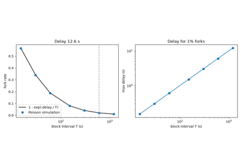
Propagation delay causes forks (Decker and Wattenhofer 2013)
2015 – Eclipse Attacks#
A node sees the network only through its connections. If an attacker owns all of them, the node sees only what the attacker shows it. The node is eclipsed.
A Bitcoin node keeps an address table: a list of IP addresses of peers it has heard of. When it starts, it picks its outbound connections from that table. Heilman, Kendler, Zohar and Goldberg showed that an attacker with a few thousand IP addresses could monopolize a node’s connections:
The attacker repeatedly sends the victim its own addresses.
These gradually push honest addresses out of the victim’s table.
The attacker waits for the victim to restart.
On restart, the victim picks its connections from a table full of attacker addresses.
The attacker can then use the eclipsed node:
to double-spend against it: pay it with coins that the rest of the network sees spent elsewhere;
to waste its mining power on blocks nobody else will build on;
to split the network.
Suppose a fraction \(f\) of the address table were the attacker’s, and each connection were an independent draw from the table. Then
In words: every one of the outbound connections must land on an attacker
address. With eight outbound connections, even \(f = 0.9\) gives only 43%
(0.9 ** 8). So the attacker must fill nearly the whole table. Its real task
is to push honest addresses out.
Bitcoin’s address manager already made that hard:
A network group is a block of IP addresses that share their first part and usually belong to one provider.
The table is split into buckets. Each address goes into a bucket chosen by a secret hash of its network group.
So an attacker with addresses in few groups reaches few buckets. That is why the attack needed addresses spread over many groups.
The paper’s countermeasures, adopted by Bitcoin Core, strengthened this design:
Deterministic eviction: a hash fixes which slot a new address may replace, so flooding cannot pick its victims.
Test-before-evict: before dropping an old address, try to connect to it, and keep it if it answers.
Feeler connections: short test connections to newly heard addresses.
Anchor connections: remember a few outbound peers and reconnect to them after a restart.
More buckets.
Implementation: blockchainkit.network.systems.addresses.AddressManager
and blockchainkit.network.systems.addresses.eclipse_probability() model
group bucketing and random eviction only; Bitcoin Core’s address manager also
has separate new and tried tables, test-before-evict, and feeler and anchor
connections.
References: E. Heilman, A. Kendler, A. Zohar and S. Goldberg, Eclipse attacks on Bitcoin’s peer-to-peer network, 24th USENIX Security Symposium, 129–144 (2015).
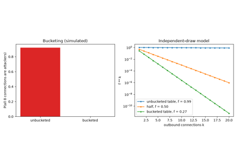
Eclipse attacks on Bitcoin’s peer table (Heilman et al. 2015)
2016 – Compact Block Relay#
Peers usually already hold most of a new block’s transactions. Sending the whole block again wastes bandwidth and time.
Each node keeps a mempool: its waiting room of transactions not yet in a block, like a dict from transaction hash to transaction. BIP 152, by Matt Corallo, uses it. (A BIP is a Bitcoin Improvement Proposal, a design document for a change to Bitcoin.) The block is sent as:
its 80-byte header, a fixed-size summary of the block;
a nonce, a random number chosen for this message;
one 6-byte short ID per transaction.
A short ID is computed with SipHash, a fast keyed hash: a hash function that also takes a key, so a different key gives different outputs. The key is derived from the header and nonce. Relay runs like this:
The sender computes the short ID of every transaction in the block and sends the header, nonce and short IDs.
The receiver computes the same short IDs for its mempool and builds a lookup table,
{short_id(tx): tx for tx in mempool}.It looks up each short ID in the block. It requests the missing transactions in one extra round trip.
It rebuilds the block from the transactions it has.
The message size is:
In words: header, plus 8-byte nonce, plus 6 bytes per transaction, plus the full size of each missing transaction.
Why it works, and its limits:
A transaction is typically a few hundred bytes. So the block shrinks by well over an order of magnitude. For 2,000 transactions of 400 bytes, 800 kB becomes about 12 kB.
Six bytes are only 48 bits. That is short enough that two transactions with equal short IDs can be found by brute force. By the birthday paradox it takes only about \(2^{24} \approx 17\) million tries, seconds on a laptop.
Such a collision makes the receiver rebuild the wrong block. Keying per block means an attacker cannot precompute transactions whose IDs collide in every block.
In high-bandwidth mode, a peer sends the compact block without waiting to be asked, which saves a round trip.
Compact blocks cut the bandwidth and, in high-bandwidth mode, the latency of block relay. They attack both causes of the forks Decker and Wattenhofer measured.
The coinbase, mentioned below, is a block’s first transaction, which pays the miner. No peer has it in advance, so the sender can include (“prefill”) it.
Implementation: blockchainkit.network.systems.relay.compact_block_relay()
and blockchainkit.network.systems.relay.short_id() use SHA-256 in place
of SipHash, with no high-bandwidth mode or prefilled coinbase.
References: M. Corallo, BIP 152: Compact block relay (2016). Specification.
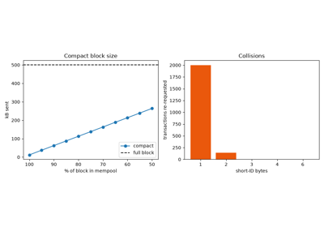
Compact blocks: send what the peer lacks (Corallo, BIP 152, 2016)
2017 – Dandelion: Transaction-Origin Privacy#
The first node to announce a transaction is usually the one that created it. So a spy can link transactions to the IP addresses that sent them.
Bitcoin used diffusion: each node forwards a transaction to each neighbor after an independent random delay. The transaction spreads outward from its source at roughly the same speed in every direction, like a ripple. A spy connects to many peers and logs when it first hears each transaction. The first-spy estimator guesses that the source is the peer the spy heard from first. That guess is usually right, because that peer is usually next to the source.
Bojja Venkatakrishnan, Fanti and Viswanath showed that well-connected spies can link transactions to IP addresses this way. They proposed Dandelion:
Stem. The source passes the transaction to one peer.
Each stem node flips a biased coin. With probability \(q\) it passes the transaction to one more peer. Otherwise it switches to the fluff phase.
Fluff. From there the transaction spreads by ordinary diffusion.
The expected stem length is
because on average the coin needs \(1/(1 - q)\) flips before it says “stop”. For \(q = 0.9\), that is 10 hops.
Why it works:
The diffusion that spies observe starts where the stem ended. That point is a random number of hops away from the source.
Routing stems over a line-shaped anonymity graph gives nearly optimal privacy against the first-spy estimator. That graph is a separate overlay in which each node forwards stems to one fixed successor.
Dandelion++ (2018) hardened the design. Variants are deployed in several cryptocurrencies.
Implementation: blockchainkit.network.systems.privacy.first_spy_precision()
runs both modes, with stems as random walks on the peer graph itself rather
than over a separate anonymity graph.
References: S. Bojja Venkatakrishnan, G. Fanti and P. Viswanath, Dandelion: Redesigning the Bitcoin network for anonymity, Proceedings of the ACM on Measurement and Analysis of Computing Systems 1(1), 1–34 (2017). DOI.
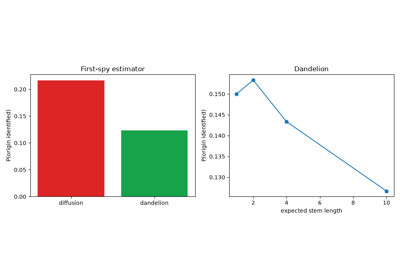
Dandelion: hiding where a transaction came from (Bojja Venkatakrishnan et al. 2017)